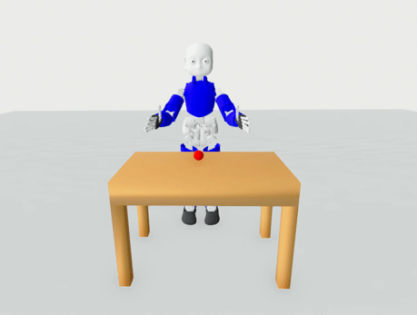

Odtlačení míčku (Push the Ball)
Cílem úlohy je udeřit do míčku a odtlačit jej co nejdále od jakékoli části stolu. Míček se vždy objeví na stejném místě. Robota lze ovládat pomocí pozičního nebo kartézského řízení. Trajektorie musí být bezkolizní (vůči stolu) a maximální povolená rychlost je 10 rad/s.
Výsledná vzdálenost se vyhodnocuje po 2 sekundách.

Úkol
Implementujte funkci push_the_ball v souboru exercise_1.py, která odtlačí míček co nejdále od stolu.
Funkce přijímá jeden argument:
client– instance třídypyCubovládající simulacinevytvářejte ve svém kódu novou instanci klienta!
Bodování
Body za vzdálenost se počítají jako:
min(3, distance * 2)tj. maximálně 3 body získáte při odtlačení míčku alespoň 1,5 m od stolu.
Požadavky
Požadavky nutné pro správnou funkci testeru exercise_1_tester.py:
nevytvářejte nového klienta, použijte předaný argument
clientnepřejmenovávejte funkci ani soubor
nevkládejte umělé prodlevy, např.
sleep()nebo voláníupdate_simulation()po dokončení pohybu
Požadavky na správné splnění úlohy:
Trajektorie nesmí kolidovat se stolem (vlastní kolize robota jsou povoleny)
Maximální povolená rychlost je 10 rad/s
Nevypínejte gravitaci